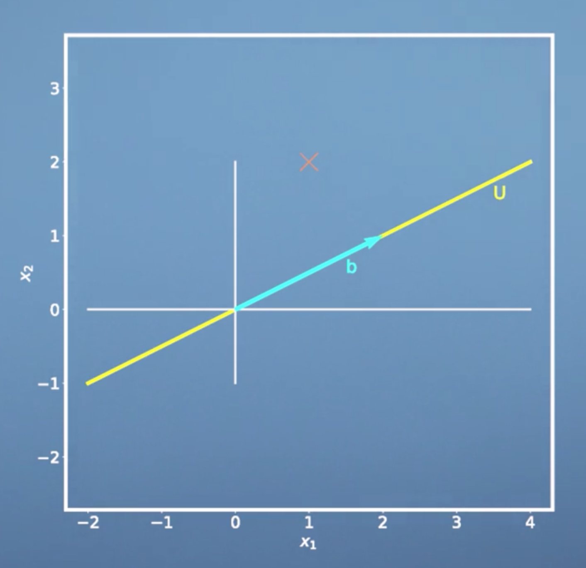
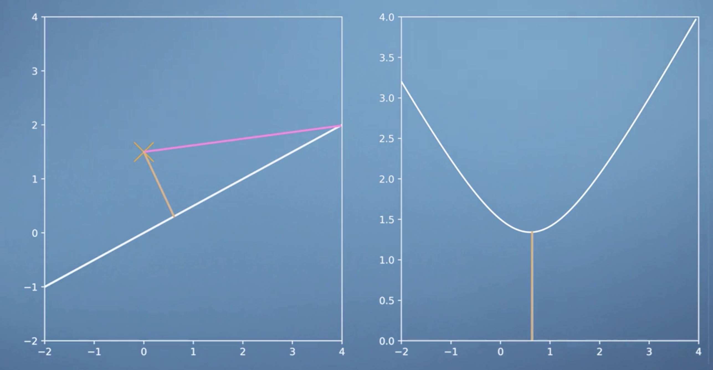
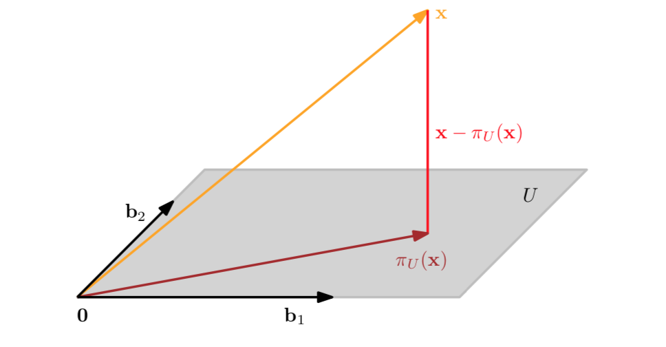
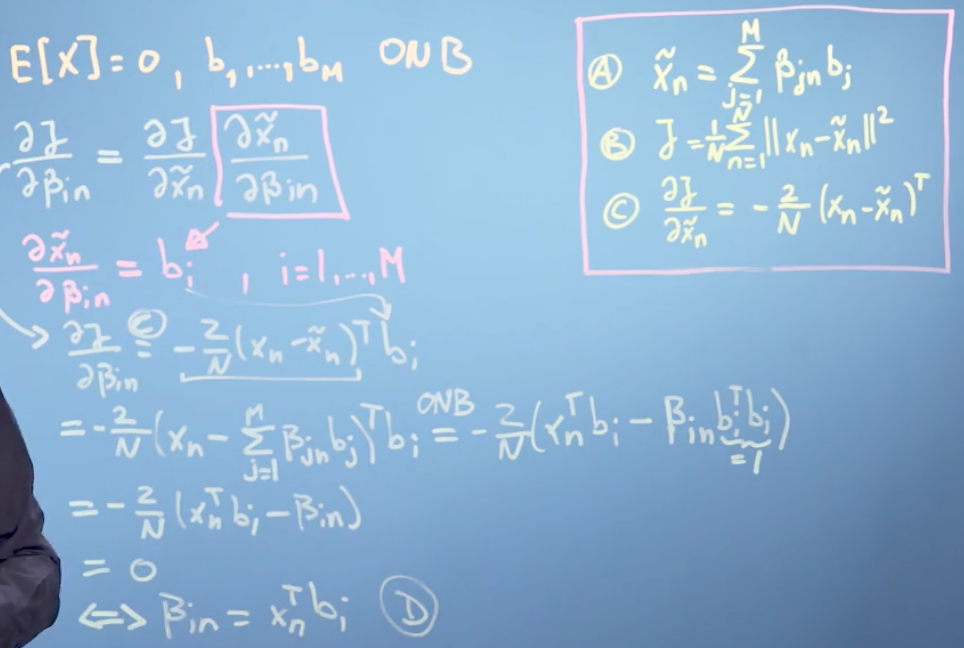

What is PCA?
High dimensional data, for example images, often have the property that it lies on a low dimensional subspace, and that many dimensions are highly correlated. Here’s an illustration in two dimensions. We can think of dimensionality reduction as a way of compressing data with some loss, similar to jpg or mp3. Principal Component Analysis (PCA) is one of the most fundamental dimensionality reduction techniques that are used in machine learning.
Pre-knowledge
Orthogonal Projections
Recall that for projection of a vector $\boldsymbol x$ onto a 1-dimensional subspace $U$ with basis vector $\boldsymbol b$ we have:
- $\frac{\boldsymbol b\boldsymbol b^T}{\lbrace\lVert\boldsymbol b \rVert^2}$ is the projection matrix.
- $\lambda$ is he coordinate of our projection with respect to the basis b
The procedure we get this equation is as follows:
\begin{equation}
\begin{aligned}
& \langle \boldsymbol b, {\pi_U}(\boldsymbol x) - \boldsymbol x \rangle = 0 \\
& \langle \boldsymbol b, {\pi_U}(\boldsymbol x) \rangle - \langle \boldsymbol b,\boldsymbol x \rangle = 0\\
& \langle \boldsymbol b, \lambda \boldsymbol b\rangle - \langle \boldsymbol b, \boldsymbol x\rangle = 0\\
& \lambda ||\boldsymbol b||^{2} - \langle \boldsymbol b, \boldsymbol x\rangle = 0 \\
& \lambda = \frac{\langle \boldsymbol b,\boldsymbol x\rangle} {||\boldsymbol b||^{2}}
\end{aligned}
\end{equation}


And for the general projection onto an M-dimensional subspace $U$ with basis vectors $\boldsymbol b_1,\dotsc, \boldsymbol b_M$ we have
where

1 | def projection_matrix1D(b): |
Orthogonal complement
If we look at an n-dimensional vector space V and K-dimensional subspace $W\subset V$. then the orthogonal complement $W^{\perp}$ is an (n-k) dimensional subspace of V and contains all vectors in V that are orthogonal to every vector in W.
Lagrange multipliers
- We can solve a constrained optimization problem of the form $ \min \limits_{x}f(x), s.t.g(x) = 0 $ where g(x) is an equality constraint
- The constraints can be absorbed into a single objective function, the Lagrangian, which combines the original loss function and the constraints as $L(x,\lambda) = f(x) - \lambda g(x)$. $\lambda$ is called a Lagrange multiplier.
- We solve the constrained optimization problem by computing the partial derivatives $\frac{\partial L}{\partial x}$ and $\frac{\partial L}{\partial \lambda}$, setting them to 0 and solving for $\lambda$ and $x$
Dive into PCA
If we have a data set which contains N samples and D features, $X = {x_i,\cdots,x_N}, x \in \mathbb{R}^{D}$, Our objective is to find a low dimensional representation of the data that is as similar to X as possible. Before getting start, let’s briefly review three important concepts.
- The first one is that every vector in $\mathbb{R}^{D}$ can be represented as a linear combination of the basis vectors. In the following we will assume that the $b_i$ are an orthonormal basis of $\mathbb{R}^{D}$
- We can interpret $\beta_{i_n}$ to be the orthogonal projection of $x_n$ onto the one dimensional subspace spanned by the it’s basis vector
- We define B to be the matrix that consists of these orthonormal basis vectors.
Then the projection of X onto the subspace is:
So, we took our general way of writing any vector in $\mathbb{R}^{D}$ which comes from property one, and we split the sum in property one into two sums. One is living in an M-dimensional subspace and the other one is living in a (D-M) dimensional subspace which is an orthogonal complement to this particular subspace.
$b1,\cdots,b_{M}$ span the principal subspace
Assuming we have data $X_1,\cdots,X_n$, we want to find parameters $beta i_n$ and orthonormal basis vectors $b_i$, such that the average squared reconstruction era is minimised. And we can write the average squared reconstruction error as follows.
The parameters are the $\beta_{i_n}$ and the $b_i$. We set the partial derivatives of J with respect to these parameters to zero and solve for the optimal parameters
We can prove that the optimal coordinates of $\widetilde{x_n}$ with respect to our basis are the orthogonal projections of the coordinates of our original data point onto the ith basis vector that spans our principal subspace.

This projection matrix takes our data covariance matrix and project it onto the orthogonal compliment of the principal subspace. That means, we can reformulate the loss function as the variance of the data projected onto the subspace that we ignore. Therefore, minimising this loss is equivalent to minimising the variance of the data that lies in the subspace that is a orthogonal to the principal subspace. In other words, we are interested in retaining as much variance after projection as possibl.
Using the results from earlier, We can write our loss function as the $J = \sum_{j=M+1}^{D}b_j^{T}Sb_j$. Where S is the data covariance matrix.
We end up with $\lambda$ as our loss function. Therefore the average squared reconstruction error is minimised if $\lambda$ is the smallest eigen value of the data covariance matrix. And that means we need to choose $B_2$ as the corresponding eigen vector and that one will span the subspace that we will ignore. $B_1$ which spans the principal subspace is then the eigen vector that belongs to the largest eigen value of the data covariance matrix.
Steps of PCA
- We subtract the mean from the data and send it at zero to avoid numerical problems.
- We divide by the standard deviation to make the data unit-free.
- We Compute the eigenvalues and eigen vectors of the data covariance matrix.
- And finally, we can project any data point onto the principal subspace that is spanned by the eigenvectors that belong to the largest eigenvalues.
1 | def normalize(X): |